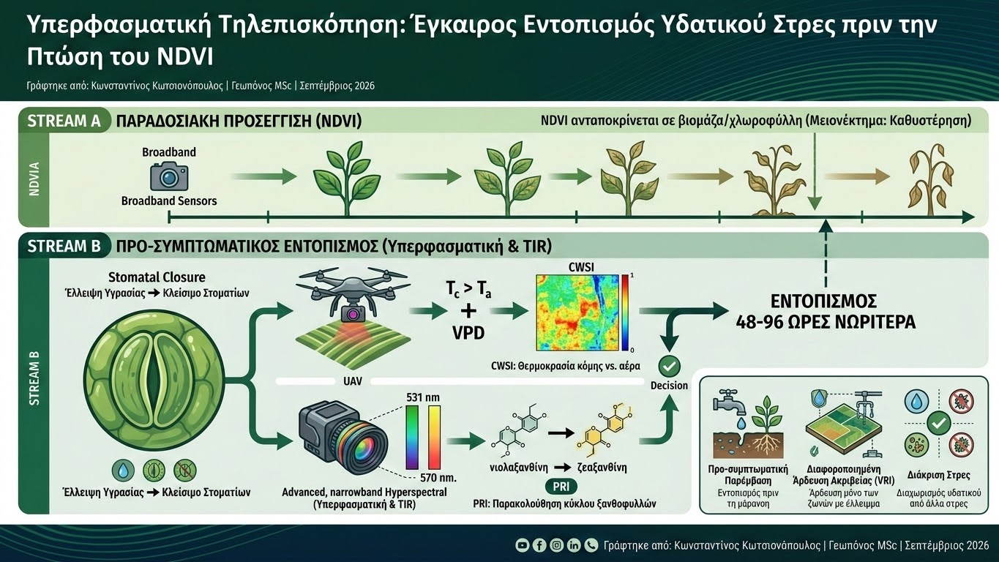

Στη διαχείριση της άρδευσης ακριβείας, η παρακολούθηση της κατάστασης υδάτωσης των καλλιεργειών στηρίζεται συχνά σε ευρυζωνικούς πολυφασματικούς δείκτες, με κυρίαρχο τον Κανονικοποιημένο Δείκτη Διαφοράς Βλάστησης (NDVI). Ωστόσο, ο δείκτης αυτός παρουσιάζει ένα σημαντικό φυσιολογικό μειονέκτημα: ανταποκρίνεται κυρίως σε μεταβολές της συγκέντρωσης χλωροφύλλης και της φυλλικής βιομάζας. Όταν το NDVI υποχωρήσει λόγω έλλειψης νερού, το φυτό έχει ήδη υποστεί μη αναστρέψιμη επιβράδυνση της ανάπτυξης και απώλεια παραγωγικού δυναμικού. Η υπέρβαση αυτού του περιορισμού επιτυγχάνεται μέσω της Υπερφασματικής Τηλεπισκόπησης (Hyperspectral Imaging) και της Θερμικής Υπέρυθρης Απεικόνισης (Thermal Infrared - TIR).
Η πρώτη άμυνα του φυτού απέναντι στην έλλειψη εδαφικής υγρασίας είναι το κλείσιμο των στοματίων, με στόχο τον περιορισμό των απωλειών νερού μέσω διαπνοής. Η μείωση της στοματικής αγωγιμότητας επιφέρει δύο άμεσες συνέπειες: άνοδο της θερμοκρασίας του φυλλώματος λόγω μείωσης της εξατμιστικής ψύξης και διαταραχή του κύκλου των ξανθοφυλλών στους χλωροπλάστες. Με τη χρήση αισθητήρων υπερφασματικής ανάλυσης στενής ζώνης, υπολογίζεται ο Φωτοχημικός Δείκτης Ανακλαστικότητας (Photochemical Reflectance Index - PRI) στα μήκη κύματος 531 nm και 570 nm. Ο δείκτης αυτός παρακολουθεί τη μετατροπή της βιολαξανθίνης σε ζεαξανθίνη, καταγράφοντας τη μεταβολή της φωτοχημικής απόδοσης σε πραγματικό χρόνο.

Η ταυτόχρονη ενσωμάτωση θερμικών καμερών σε μη επανδρωμένα αεροσκάφη (UAVs) επιτρέπει τον υπολογισμό του Δείκτη Υδατικού Στρες Καλλιέργειας (Crop Water Stress Index - CWSI). Ο CWSI ποσοτικοποιεί τη διαφορά μεταξύ της θερμοκρασίας της κόμης ($T_c$) και της θερμοκρασίας του αέρα ($T_a$), ομαλοποιημένης με βάση το έλλειμμα πίεσης υδρατμών (VPD). Με τον τρόπο αυτό, ο γεωπόνος εντοπίζει με χωρική ακρίβεια εκατοστών τα τμήματα του αγρού όπου τα φυτά αντιμετωπίζουν αρχικό στάδιο στρες, 48 έως 96 ώρες πριν διαπιστωθεί οποιαδήποτε πτώση στους δείκτες πράσινης βιομάζας.
Τα επιστημονικά τεκμηριωμένα πλεονεκτήματα της υπερφασματικής και θερμικής διάγνωσης περιλαμβάνουν:
- Προ-συμπτωματική Παρέμβαση: Εντοπισμός περιορισμένης διαθεσιμότητας νερού στη ριζοσφαίρα προτού εκδηλωθούν μακροσκοπικά συμπτώματα μάρανσης ή επιβράδυνση της κυτταροδιαίρεσης των καρπών.
- Διαφοροποιημένη Άρδευση Ακριβείας (Variable Rate Irrigation): Σύνδεση των παραγόμενων χαρτών CWSI με αυτοματοποιημένα συστήματα μεταβλητής παροχής, επιτρέποντας την άρδευση αποκλειστικά των ζωνών με πραγματικό έλλειμμα.
- Διάκριση Στρες: Συνδυασμός PRI και δομικών δεικτών για τον σαφή διαχωρισμό του υδατικού στρες από τροφοπενίες αζώτου ή προσβολές από παθογόνα του ριζικού συστήματος.
Η υπερφασματική τηλεπισκόπηση μετατοπίζει τη διαχείριση της άρδευσης από την παθητική αντιμετώπιση συμπτωμάτων στην ενεργητική πρόληψη. Για τον σύγχρονο γεωπόνο, η ποσοτικοποίηση της φυσιολογικής απόκρισης του φυτού προσφέρει το απαραίτητο υπόβαθρο για τη μεγιστοποίηση της αποδοτικότητας χρήσης νερού (WUE) και τη θωράκιση των καλλιεργειών απέναντι στην κλιματική μεταβλητότητα.